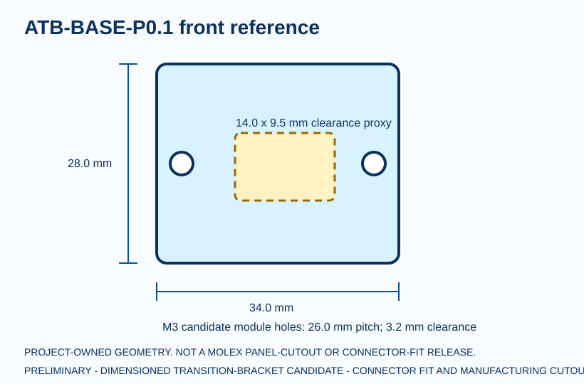
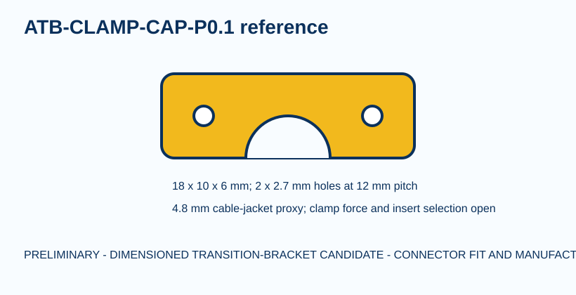
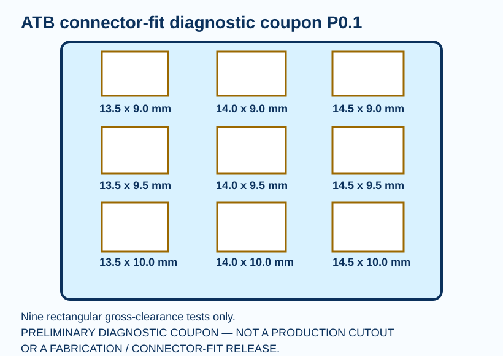

25
named whole-body placements
HR-30 whole-body P0.1
The robot now has a dimensioned service-cassette candidate at all 25 axes and a printable nine-window connector-fit coupon. The connector cutout remains unresolved until primary drawing reconciliation and received-part testing are complete.
named whole-body placements
diagnostic coupon openings
mm minimum nominal cassette-envelope clearance
received-part fit checks
Gold plates and blue clamp caps are the 25 transition candidates. Translucent body solids are positional context, not replacement production body CAD.
Download whole-body placement STEP · Download editable standard cassette STEP

34 × 28 × 3 mm panel plate, 26 mm M3 candidate module-hole pitch, integral two-sided clamp shelves.

Two removable caps prevent cable jacket load from reaching Micro-Fit or JST contacts.

The 96 × 78 × 3 mm coupon spans 13.5–14.5 mm widths and 9.0–10.0 mm heights. It is designed to cheaply measure gross clearance against a received housing before changing 25 brackets.
Diagnostic only. The rectangular matrix does not reproduce panel ears, latch access or retention geometry. A coupon result cannot release the production cutout.
Download coupon STEP · Open the print/test traveler · Open the blank inspection record
Fit-check material candidate: Prusament PETG V0 Natural, IDF 17666 / IDS 3514. This package takes no UL or production-material credit.
The 14 × 9.5 mm opening is a project-owned clearance proxy, not a Molex production cutout. The current official part identity is source-bound, but the manufacturing cutout has not been reliably extracted. Before fabrication release, reconcile the revision-controlled drawing and independently check its dimensions, then test a received connector. Production material, inserts, fasteners, clamp force, cable OD, tolerance, guard clearance and joint sweeps also remain open.
| Axis | Module region | Candidate XYZ (mm) | Source route point |
|---|---|---|---|
| L_HIP_YAW | LEFT LEG | 62.500, -36.000, 416.000 | LOOP-L_HIP_YAW-PWR-P01 |
| L_HIP_ROLL | LEFT LEG | 62.500, -36.000, 385.000 | LOOP-L_HIP_ROLL-PWR-P01 |
| L_HIP_PITCH | LEFT LEG | 62.500, -36.000, 354.000 | LOOP-L_HIP_PITCH-PWR-P01 |
| L_KNEE_PITCH | LEFT LEG | 61.500, -36.000, 210.000 | LOOP-L_KNEE_PITCH-PWR-P01 |
| L_ANKLE_PITCH | LEFT LOWER LEG/FOOT | 62.500, -36.000, 61.000 | LOOP-L_ANKLE_PITCH-PWR-P01 |
| L_ANKLE_ROLL | LEFT LOWER LEG/FOOT | 62.500, -36.000, 28.000 | LOOP-L_ANKLE_ROLL-PWR-P01 |
| R_HIP_YAW | RIGHT LEG | -62.500, -36.000, 416.000 | LOOP-R_HIP_YAW-PWR-P01 |
| R_HIP_ROLL | RIGHT LEG | -62.500, -36.000, 385.000 | LOOP-R_HIP_ROLL-PWR-P01 |
| R_HIP_PITCH | RIGHT LEG | -62.500, -36.000, 354.000 | LOOP-R_HIP_PITCH-PWR-P01 |
| R_KNEE_PITCH | RIGHT LEG | -63.500, -36.000, 210.000 | LOOP-R_KNEE_PITCH-PWR-P01 |
| R_ANKLE_PITCH | RIGHT LOWER LEG/FOOT | -62.500, -36.000, 61.000 | LOOP-R_ANKLE_PITCH-PWR-P01 |
| R_ANKLE_ROLL | RIGHT LOWER LEG/FOOT | -62.500, -36.000, 28.000 | LOOP-R_ANKLE_ROLL-PWR-P01 |
| L_SHOULDER_PITCH | LEFT ARM | 110.000, -35.000, 610.000 | LOOP-L_SHOULDER_PITCH-PWR-P01 |
| L_SHOULDER_ROLL | LEFT ARM | 110.000, -35.000, 577.000 | LOOP-L_SHOULDER_ROLL-PWR-P01 |
| L_ELBOW_PITCH | LEFT ARM | 127.000, -35.000, 444.893 | LOOP-L_ELBOW_PITCH-PWR-P01 |
| R_SHOULDER_PITCH | RIGHT ARM | -110.000, -35.000, 610.000 | LOOP-R_SHOULDER_PITCH-PWR-P01 |
| R_SHOULDER_ROLL | RIGHT ARM | -110.000, -35.000, 577.000 | LOOP-R_SHOULDER_ROLL-PWR-P01 |
| R_ELBOW_PITCH | RIGHT ARM | -129.000, -35.000, 444.893 | LOOP-R_ELBOW_PITCH-PWR-P01 |
| WAIST_YAW | PELVIS/WAIST | 0.000, -50.000, 425.000 | LOOP-WAIST_YAW-PWR-P01 |
| L_WRIST_ROTATION | LEFT HAND/FOREARM | 132.000, -35.000, 299.979 | LOOP-L_WRIST_ROTATION-PWR-P01 |
| L_GRIPPER | LEFT HAND/FOREARM | 132.000, -35.000, 256.979 | LOOP-L_GRIPPER-PWR-P01 |
| R_WRIST_ROTATION | RIGHT HAND/FOREARM | -134.000, -35.000, 299.979 | LOOP-R_WRIST_ROTATION-PWR-P01 |
| R_GRIPPER | RIGHT HAND/FOREARM | -134.000, -35.000, 256.979 | LOOP-R_GRIPPER-PWR-P01 |
| HEAD_PAN | HEAD/NECK | 0.000, -56.000, 650.000 | LOOP-HEAD_PAN-PWR-P01 |
| HEAD_TILT | HEAD/NECK | 0.000, -56.000, 690.000 | LOOP-HEAD_TILT-PWR-P01 |
25 placements · coupon matrix · parts · interfaces · nominal spacing · open holds · sources
NO PROCUREMENT, FABRICATION, CONNECTION, POWERED-TEST, MOTION OR ENERGIZATION AUTHORITY